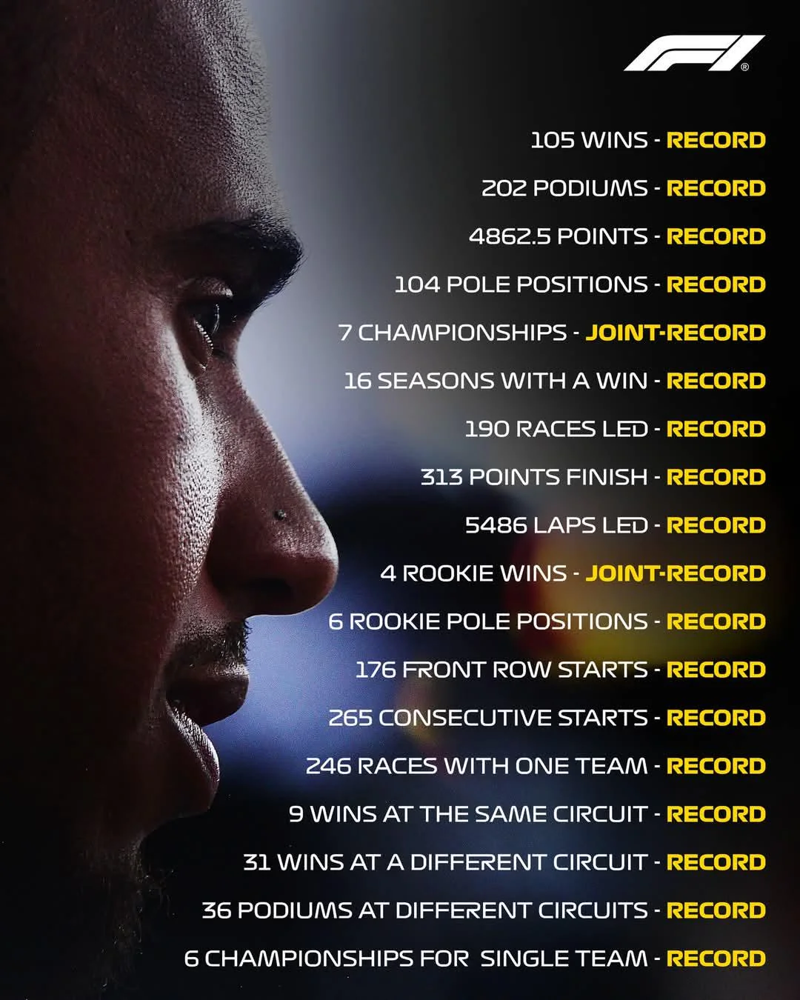
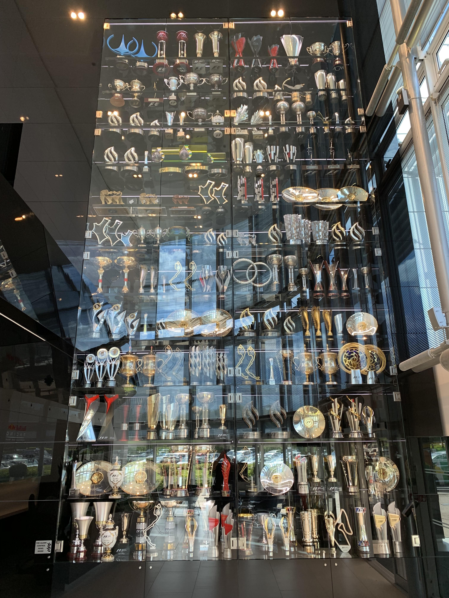

Palmarès et Records de Lewis Hamilton
Statistiques et records historiques de Lewis Hamilton en Formule 1. Au fil des saisons, le pilote britannique s'est imposé comme l'un des plus grands sportifs de tous les temps.
Les Titres de Champion du Monde
Lewis Hamilton totalise 7 titres de Champion du Monde de Formule 1, co-détenteur du record absolu de l'histoire de la discipline avec Michael Schumacher :
- 2008 : Avec McLaren-Mercedes
- 2014 : Avec Mercedes AMG F1
- 2015 : Avec Mercedes AMG F1
- 2017 : Avec Mercedes AMG F1
- 2018 : Avec Mercedes AMG F1
- 2019 : Avec Mercedes AMG F1
- 2020 : Avec Mercedes AMG F1

Statistiques globales en Formule 1
Ses chiffres records témoignent d'une régularité et d'une longévité exceptionnelles au plus haut niveau mondial :
- Victoires : Plus de 100 victoires en Grands Prix.
- Pole Positions : Détenteur du record absolu de pole positions.
- Podiums : Plus de 200 podiums à son actif.
- Points inscrits : Le plus grand nombre de points de l'histoire de la F1.
